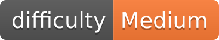

Building a 4onse weather station¶
Weather station documentation¶
This documentation aims to be a comprehensive guide to build the first official version of the 4onse weather station. It contains the full documentation both for the hardware and the software components. Visit http://www.4onse.ch for more information and contact us to help, give your feedback or ask specific questions.
What is 4onse?¶
The 4onse project (4 TIMES OPEN & NON-CONVENTIONAL TECHNOLOGY FOR SENSING THE ENVIRONMENT) is funded by the Swiss National Science Foundation (SNSF) in the context of the Research for Development (R4D) program with decision IZ07Z0_160906/1. One of the project outcames is an Environmental Monitoring System (EMS) based on “Open” technogies, including software, hardware, standard and data.
Go to the guides¶
The project has developed two type of system, which are based on the same sensors but differs for hook up approach: the 4onse-mod uses wires and connectors while 4onse-pcb uses printed board.